Airborne hyperspectral data acquisition and pre-processing
Acquisition of airborne hyperspectral (HS) images requires careful flight planning supported by field campaigns. The following preprocessing of data comprises necessary radiometric and geometric corrections. In addition, spectra transformations and filtering can be carried out to reduce data volume and suppress the noise present in the data.
Objectives
In this theme, you will learn about:
- flight planning and in-situ measurements for radiometric and geometric correction of images,
- methods of radiometric correction of HS images,
- geometric correction,
- selected spectra transformations (e.g., maximum noise fraction, continuum removal, spectral indices), and spectra smoothing and denoising.
The theme includes an exercise, a self-evaluation quiz, and a list of references.
In the practical exercise, you will carry out geometric correction of images acquired with a Nano-Hyperspec® camera mounted on the DJI Matrice 600 Pro platform.
After finishing this theme, you will be aware of flight parameter settings and in-situ measurements to be considered for a successful HS flight mission; you will understand the principles of radiometric and geometric correction; and you will be familiar with noise and data volume reduction methods.
Planning airborne flight missions
Radiometric and geometric quality of acquired images is one of the key factors influencing the success of any application in imaging spectroscopy. Once the decision on the area of interest and required spectral and spatial resolution is made, it is necessary to choose a suitable sensor and platform – spaceborne, airborne, or remotely piloted aircraft system (RPAS)/uncrewed aerial vehicle (UAV). While the orbits and instruments of the spaceborne systems are fixed by their providers, planning of airborne missions is an important part of each use case. The main sensor and platform parameters to be considered for an airborne flight mission are summarised in Table 1. Details on sensor parameters, so called parameters of interior orientation (focal length, lens distortion, and position of the principal point), and parameters of exterior orientation (position of the projection centre and rotations of the sensor in space), can be found in photogrammetric literature (e.g., Kraus, 2007, Förstner and Wrobel, 2016).
Table 1. Selected sensors and airborne platform parameters to be considered for flight mission planning. For an explanation of sensor types and platforms, visit Theme 1.
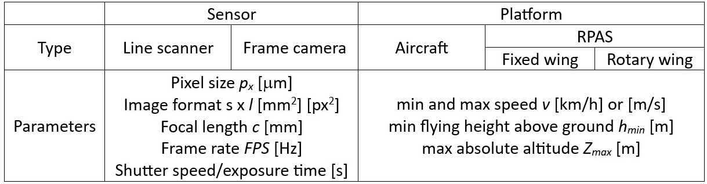
Given the sensor pixel size px, focal length c, and the required ground sampling distance GSD, the platform flying height above the terrain h can be calculated as \(h={{GSD}\over{p_x}} \ c\) , and the absolute flying height above the see level \(Z = h + Z_{GL}\), where ZGL corresponds to the height of the terrain modelled, e.g., from a digital terrain model (DMT). The size of the swath S covered with a line scanner is given by the formula \(S = {{h}\over{c}} \ s\) , and the area covered with a frame camera can be expressed as \(S \times L \ [m^{2}]\) , where \(S = {{h}\over{c}} \ s\) and \(L = {{h}\over{c}} \ l\). The relation between the above mentioned parameters is shown in Figure 1.
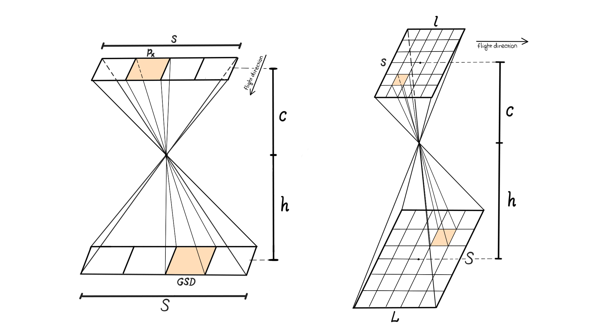
Figure 1. Relation between ground sampling distance (GSD), focal length c, flying height above the terrain h, and the area covered on the ground with a linear scanner (left) and a frame camera (right). Figure by course authors.
Other important parameters are exposure time and frame rate (FPS), i.e., the number of scanned lines or frame images acquired per second. They are related – the exposure time must not exceed the frame period FP=1/FPS [s]. Table 2 gives an example of calculating image acquisition parameters.
Table 2. Example of calculating selected parameters for image acquisition with a Nano-Hyperspec® line sensor
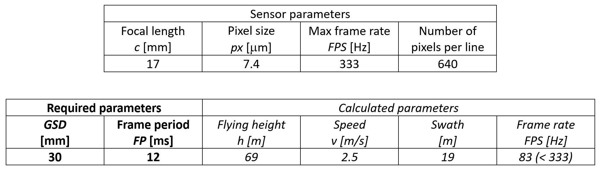
To cover the whole area of interest with no gaps, the neighbouring strips are flown with a side overlap q of at least 20%-30% of swath S. In the case of frame cameras, a forward overlap p must also be considered (Figure 2). If photogrammetric processing is included, i.e., image orientation based on aerotriangulation and bundle adjustment (Kraus, 2007), utilising image matching (Remondino et al., 2014) for the derivation of a digital surface model (DSM), overlap values of p = 60% – 80% and q = 30% - 80% are applied. Smaller values hold for aerial acquisitions with more stable flight control, while larger overlaps are used for RPAS missions.
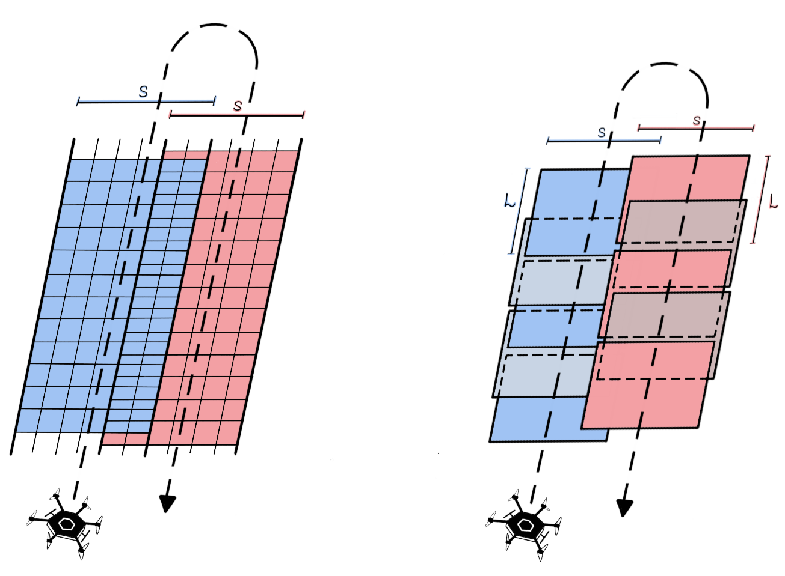
Figure 2. Side overlap between neighbouring image strips collected with a linear scanner (left); forward overlap and side overlap of images acquired with a frame camera (right). Figure by course authors.
Both open source and proprietary software tools for flight planning are available. Their usability is to a certain extent limited to the used platform (drone manufacturer in the case of RPAS). Due to the dynamic development in this field, a list of the existing software tools is not provided, but you can make your own search based on the key words “drone mission planning software” or “drone flight planner app”. Figure 3 gives a general workflow for airborne HS flight planning.
Figure 3. A general workflow for flight mission planning. Figure by course authors.
The parameters of the platforms and sensors that are provided in the respective technical data sheets are either pre-defined by a software provider or can be set by the user. The flight mission planning applications contain graphic tools for drawing an area of interest. Importing a .kmz file is usually also possible. Further settings comprise flight-specific parameters such as altitude above the mean sea level and above the ground, GSD, image overlaps, platform velocity, etc. (cf. Figure 4*). Mutually dependent parameters (e.g., GSD and the flying height above the ground) are automatically adjusted after one of them is set up. Based on the setup parameters, a flight route is automatically planned and visualised. The created flight plan can be further optimised regarding, e.g., the starting and landing points, the flight line azimuth, overlap, etc. The final flight plan is then exported and can be uploaded to the flight control system.
The possibility of following the terrain during the flight is an important feature of the flight control system to be considered for RPAS. It allows for a constant GSD in sloped terrain. On the other hand, it requires a reliable DTM (and information about the height of vegetation and buildings if they are present) to avoid any collisions of the drone.
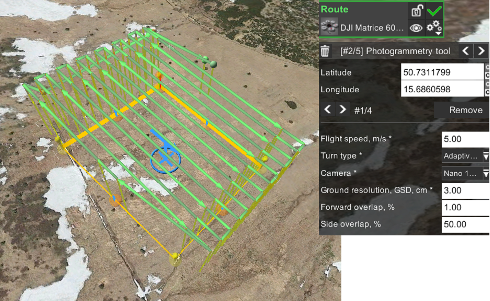
Figure 4. Flight route created in the UgCS drone mission planning software for a Nano-Hyperspec® line camera mounted on the DJI Matrice 600 Pro. 100 m x 100 m plot at the Bílá louka meadow, Krkonoše mountains. Figure by course authors.
It is worth mentioning that the radiometric quality of HS images is of high importance. With respect to the radiometric corrections discussed later in this theme, it is recommended to set the azimuth of the flight lines very close to the current azimuth of the sun. Moreover, the images shall be acquired under stable illumination conditions, i.e., either a clear sky or a homogeneous cloud cover (enabling to perform the flight).
For more details on planning airborne image data acquisition missions, read the paper by Pepe et al. (2018).
Field campaigns
The goal of field campaigns is to collect data necessary for proper geometric and radiometric correction of the acquired images.
The ground control points (GCPs) are used for indirect or integrated sensor orientation (for explanation, see the section Geometric correction). Moreover, check points (CPs) are used for an independent check of the horizontal accuracy of a final image product (orthoimage). Both kinds of points are represented by signalised or natural distinct points (see Figure 5), and their position is usually determined using a Global Navigation Satellite System (GNSS) receiver enabling Real-Time Kinematic (RTK) measurements (horizontal accuracy of 1 – 2 cm, vertical accuracy of 3 – 5 cm).
In-situ spectra of calibration tarps and overselected materials are collected in the field with portable spectroradiometers to improve atmospheric correction of collected data (Figure 5). Moreover, solar irradiation can be measured with sunphotometers. The section Radiometric correction explains how to use these measurements.

Figure 5. Field campaigns supporting the HS image acquisition - signalised ground control points (left), tarp for radiometric calibration (upper right), measurement of reflectance of selected materials with a portable spectroradiometer for atmospheric correction. Photos by course authors.
Radiometric correction
A raw HS data cube consists of layers of pixels, whose digital numbers (DNs) are related to the intensity of electromagnetic energy (incident on cells of a charge-coupled device (CCD)) within a given narrow interval of wavelengths. DNs do not have any physical unit, and the values are dependent on the processing of the recorded signal of each sensor. In the first step called sensor calibration, the DNs are converted to spectral (at-sensor) radiance Ls [Wm-2sr-1μm-1]. The relation between L and DN is expressed for each sensor’s spectral band b with a linear function \(L_b^s=G_b DN_b+O_b\), where Gb and Ob are the slope (gain) and offset, respectively. If the spectral values shall be compared over time with in-situ or laboratory values, further corrections due to variable solar illumination, atmospheric effects, and topography must be considered, as discussed in the theme on satellite image processing workflow in Module 3. The output of radiometric correction is an image whose pixel values represent spectral reflectance at the surface (Figure 6).
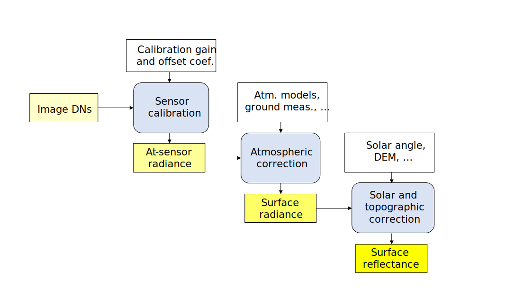
Figure 6. General workflow for radiometric correction. Figure by course authors.
Before application of the sensor calibration, the dark current must be subtracted from the raw data. The dark current measurement, i.e., collecting data with a covered objective lens, is performed prior to the flight. Corrections for scattered light, frame shift smear, and bad/erroneous pixels are introduced as described, e.g., in de Miguel et al. (2015) for the CASI sensor. The sensor calibration follows. The gain and offset parameters for each spectral band are determined in the laboratory and shall be regularly recalibrated (as a consequence of sensor aging).
The water vapour content and the composition and content of aerosols in the atmosphere affect the amount of incident solar radiation and surface reflected radiation captured by the sensor. They can change in time and across larger locations, which can cause problems in image processing, especially in the case of aerial campaigns. Thus, it is always an advantage to perform flights on days when the atmospheric conditions are stable over the area of interest.
Absorption and scattering are the atmospheric effects we deal with. Molecules in the atmosphere (e.g., water vapor, ozone, and carbon dioxide) absorb incident solar radiation at various wavelengths, as shown in Figure 7. The fraction of the electromagnetic radiation incident on the Earth’s surface to the solar irradiation at the top of the atmosphere is referred to as transmittance of the atmosphere. Particles or large gas molecules redirect the electromagnetic radiation from its original path. The result of this interaction is called scattering. Details on the absorption and scattering mechanisms can be found, e.g., in the CCRS Remote Sensing Tutorial and Stull (2023).
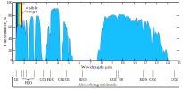
Figure 7. Transmittance of the atmosphere from visible to far infrared spectrum. Figure by Even 2021/Wikipedia, CC0 1.0 Universal.
{kind=link}
The radiance in the solar region (0.4 - 2.5 um) collected from flat terrain in the sensor Ls basically consists of the following components (ATCOR- 4, Schowengerdt, 2006; see also Figure 8):
\(L_1^s\): surface reflected radiation
\(L_2^s\): up-scattered path radiance
\(L_3^s\): adjacency radiance (radiation reflected from objects adjacent to the measured surface)
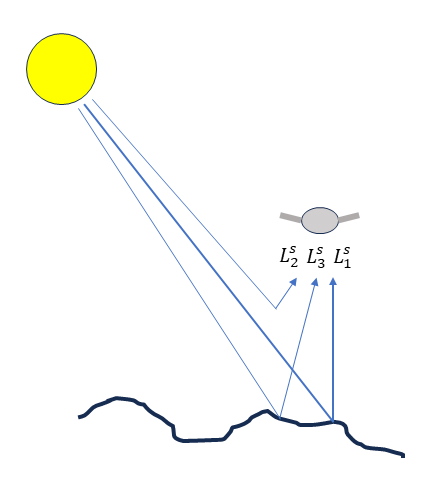
Figure 8. Components of measured at-sensor radiance. Figure by course authors.
Depending on the in-situ measurements and available software tools, atmospheric correction can be carried out in the following ways:
1. Application of radiative transfer models
Radiative Transfer Models (RTM) provide an estimate of the atmospheric effects of absorption and scattering on measured (at-sensor) radiance. There are several algorithms available for atmospheric correction of HS data acquired during airborne missions:
- MODTRAN® - MODerate resolution atmospheric TRANsmission (Spectral Sciences Int.)
- 6S - Second Simulation of the Satellite Signal in the Solar Spectrum (Vermote et al., 1997)
- Airborne ATCOR® - ATCOR4 (ATmospheric and topographic CORrection)( ReSe Applications GmbH)
The amount and composition of atmospheric constituents (aerosols, water vapor) are estimated from in-situ measurements (photometers) or directly from collected data (water vapor bands, aerosol optical thickness retrieval using, e.g., the dark dense vegetation algorithm). Based on the parameters of the atmosphere and the flying height, the transmittance of the atmosphere can be modelled for each wavelength (based on look-up tables generated by the radiative transfer model). Under the assumption of flat terrain, cloud-free conditions, and neglecting the adjacency radiance, the surface reflectance \(\rho\) can be estimated from the formula \(L^{s} = L^{s}_{2} + \rho \tau E_g / \pi\) where Ls is measured at-sensor radiance, \(\rho\) - reflectance of the surface, \(\tau\) - transmittance, and Eg – solar irradiance at the surface (sum of direct and scattered solar irradiance). In the final model, correction of the adjacency radiance must be added.
If in-situ spectrometric measurements (surface reflectance) are available, inflight radiometric calibration (gain and offset for each spectral band) or at-sensor radiance validation can be carried out.
If flat terrain cannot be assumed, a DTM is a required input in order to correct for topographic effects (Richter, 1997). Moreover, the Bidirectional Reflectance Distribution Function (BRDF) correction is applied (Richter and Schläpfer, 2002). In addition, corrections for cirrus cloud or shadow removal can be applied (Schläpfer et al., 2009). A comprehensive evaluation of RTMs for deriving surface reflectance from HS imagery can be found in Zhou et al. (2023).
2. Empirical line correction
Empirical line correction is based on a linear regression model relating in-situ and image observations (Figure 9). Its use was justified by several authors (e.g., Baugh and Groeneveld, 2008; Oritz et al., 2017), nevertheless, the combination with RTM models gives better results (Hadley et al., 2008). In the event that in-situ the dark target measurements are not available, the empirical line passes through the origin (which limits the method in correcting for the effect of transmitted radiation). Figure 10 shows an example of corrected spectra using the empirical line method.

Figure 9. Principle of empirical line correction. Figure by course authors.
3. Dark object subtraction
This simplest atmospheric correction method is built on the model that the at-sensor radiance \(L^s\) has just two components - surface radiance \(L_1^s\) and path radiance \(L_2^s\): \(L^s=L_1^s+L_2^s\). To model the path radiance, regions of the scene with expected zero surface reflectance (the very darkest objects in the scene) are found. The radiance of pixels corresponding to dark objects is removed from the whole scene. The method is easy to implement and requires no further data. The results may not be reliable as the assumption does not hold for real-life scenarios (Shi et al., 2016). Zhen et al. (2022) propose this method for haze removal from HS imagery.
There are other empirical methods applicable to HS imagery, such as Flat Filed correction or Internal Average Relative Reflectance (for comparison of the methods see Merzah and Jaber, 2020). Optionally, experience with methods for radiometric correction of hyperspectral imagery acquired from RPAS systems was tested, e.g., Suomalainen et al. (2021); Schläpfer et al. (2020); Hakala et al. (2018).
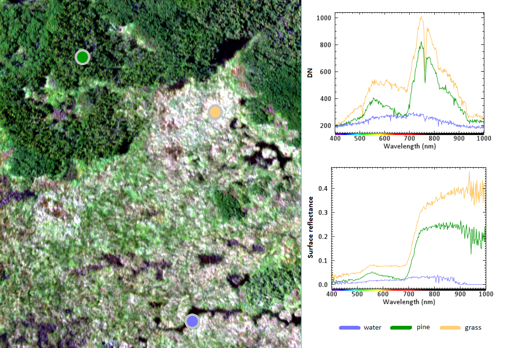
Figure 10. Example of spectra before (up right) and after (down right) atmospheric correction. The image was acquired with a Nano-Hyperspec® line camera mounted on the DJI Matrice 600 Pro with a GSD of 3 cm. The empirical line calibration was carried out based on measurements of a pre-calibrated calibration tarp. Figure by course authors.
Geometric correction
The goal of geometric correction is to compensate for geometric distortions due to perspective projection, changes in the platform altitude, velocity, and rotations, and uneven terrain. It results in an orthorectified image georeferenced in the required reference coordinate system.
The airborne systems for HS data acquisition are equipped with a GNSS receiver and an inertial measurement unit – IMU (or an inertial navigation system – INS) to determine the platform position and rotation with respect to the reference coordinate system (e.g., WGS84). Such equipment is necessary in the case of a line scanner when each image line has its own parameters of exterior orientation (Pepe et al., 2018). The method of obtaining the image orientation only from the GNSS/INS measurements is called direct georeferencing (e.g., Toth and Józków, 2016; see also Figure 11). It can be realized using RTK or post-processing kinematic (PPK) measurements. Its use requires high accuracy of the INS, which makes the whole system costly. To carry out quality assessment, a number of CPs is needed.
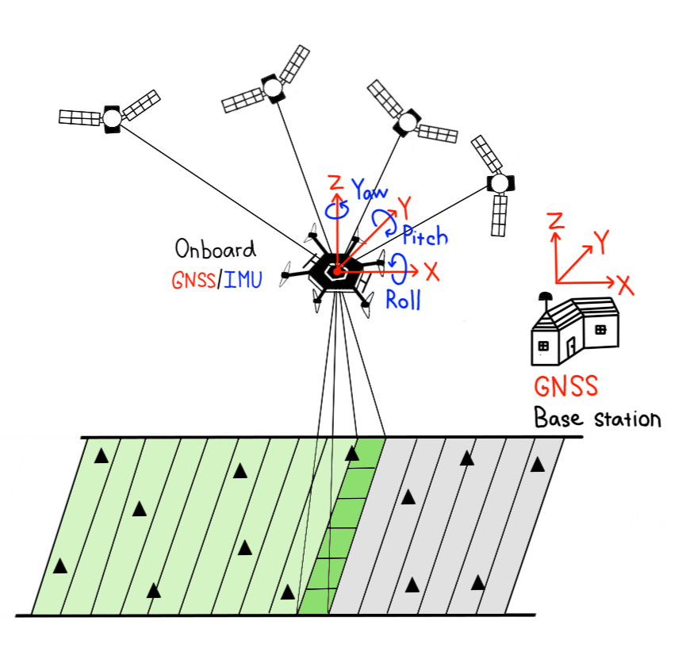
Figure 11. Direct georeferencing of HS images acquired with a line sensor. The triangles correspond to check points. Figure by course authors.
In cases where the GNSS/INS equipment is of lower quality, GCPs are used to improve the georeferencing. Such an approach is called integrated system orientation (ISO, e.g., Toth and Józków, 2016). Indirect georeferencing is then an approach when the GNSS/INS measurements are not used at all and the image orientation relies only on the GCPs – usually the case of frame cameras. All three methods of image orientation (direct, integrated, and indirect) are described in photogrammetric literature (e.g., Colomina and Molina, 2014; Kraus, 2007).
If the accuracy of the GNSS/INS is low, remaining distortions after direct georeferencing and orthorectification in images collected with a line scanner can be in the order of decimetres or meters (Hruska et al., 2012). Thus, overlapping images do not match, as shown in Figure 12.
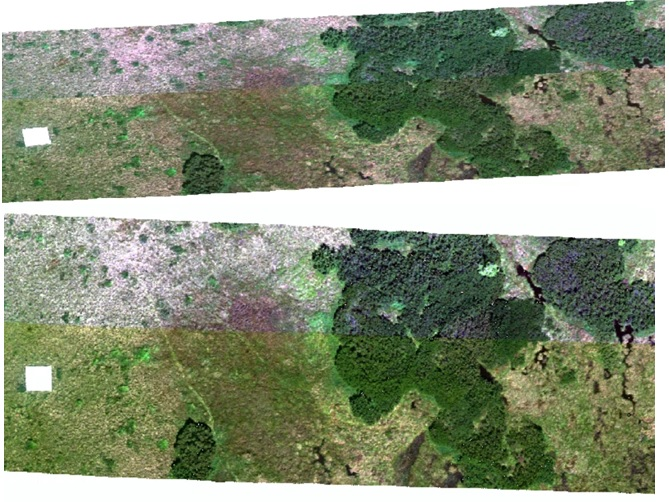
Figure 12. Geometric correction of an image acquired with a Nano-Hyperspec® line camera mounted on the DJI Matrice 600 Pro. The two overlapping image strips after direct georeferencing and orthorectification (top) and after their rectification into RGB orthoimages acquired with a frame camera Sony A7 ILCE-7 from the same platform (bottom). The correction includes transformation from the WGS84 (EPSG 4326) coordinate system to the national coordinate system S-JTSK (EPSG 5514). Figure by course authors.
A possible solution is the registration of distorted images into another geographical layer with higher accuracy. Orthoimages acquired with a RGB frame camera during the same flight or another flight within a short time interval (a few days) are often used for this purpose (Suomalainen et al., 2014; Turner et al., 2017; Habib et al., 2016; Angel et al., 2020; Červená et al. 2020). Figure 13 depicts a processing workflow for the orientation of images acquired with a line sensor based on fusion with simultaneously acquired images with a frame camera. The images from the frame camera were georeferenced using GCPs and a standard photogrammetric workflow using structure from motion (Jiang et al., 2020). Table 3 shows that a combined approach brings a considerable improvement to first-step orientation based solely on GNSS/INS.
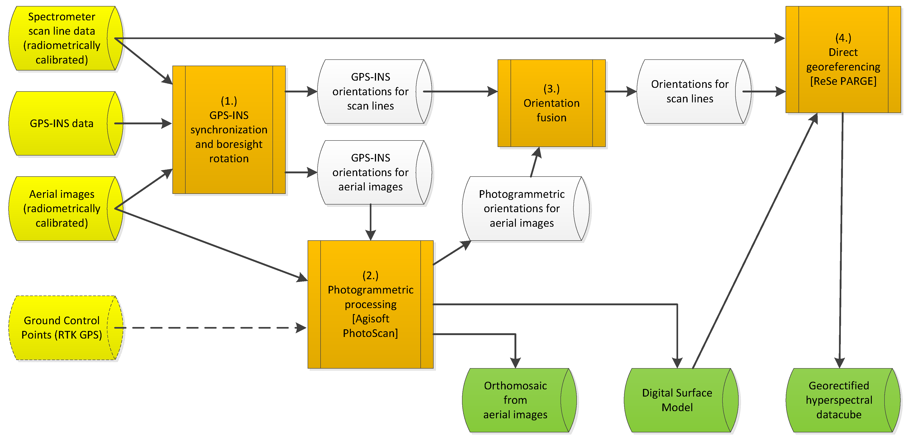
Figure 13. Geometric processing of HS imagery acquired with a line sensor supported by simultaneously collected images with a frame camera. Figure by Suomalainen et al., (2014), CC-BY 4.0 license.
Table 3. Comparison of RMSE on CPs after direct georeferencing and orthorectification of a line sensor (basic correction) and after improvement using orthoimages from a frame camera (advanced correction).
| Reference | GSD [m] | RMSE [m] basic correction | RMSE [m] advanced correction |
|---|---|---|---|
| Angel et al. 2020 | 0.007 | --- | 0.05 - 0.08 |
| Červená et al. 2020 | 0.03 | 1.74 | 0.19 |
| Habib et al. 2016 | 0.05 | 1.42 - 5.09 | 0.35 - 0.99 |
| Hruska et al. 2012 | 0.28 | 4.63 | --- |
| Turner et al. 2017 | 0.02 | --- | 0.03 - 0.06 |
Exercise
At this point, you are ready to work on the exercise. You will improve georeferencing of a HS image (3 cm GSD, for the purpose of the exercise, reduced only to three spectral bands) by its registration into a RGB orthoimage (2cm GSD). The HS image was acquired with a Nano-Hyperspec® line camera mounted on the DJI Matrice 600 Pro georeferenced using onboard GNSS/INS. The RGB images were acquired with the frame camera Sony A7 ILCE-7, georeferenced using the GCPs and structure from motion. The GCPs were signalised and measured with a GNSS/RTK receiver with an accuracy of 2 cm in the horizontal direction and 3 cm in the vertical.
Spectra transformations
Due to tge noise present in data and large data volumes, it is practical to carry out further pre-processing steps of radiometrically and geometrically corrected HS imagery before their use for time series statistical analysis or classification.
Spectra smoothening and denoising
Spectral curves collected with an airborne HS sensor contain a relatively high amount of noise due to narrow bandwidth, remaining errors from radiometric correction, etc. (Vaiphasa, 2006). The collected spectrum \(s_{0} (\lambda)\) can be then expressed as the sum of true signal \(s_{t} (\lambda)\) and noise \(n (\lambda)\):
The true signal can be estimated by convolution:
where \({\widehat s}_{t}\) is the estimation of the true signal and \(g (\lambda)\) is a convolutional, in our case smoothening filter.
One possibility of signal smoothing is the moving average method, when the given spectral value is replaced with a mean or median of L = 2k+1 neighbouring values, where k is the number of preceding and following values, respectively, of the evaluated value. Figure 14 gives an example of a spectrum smoothed with a mean and a median filter of length L = 5.
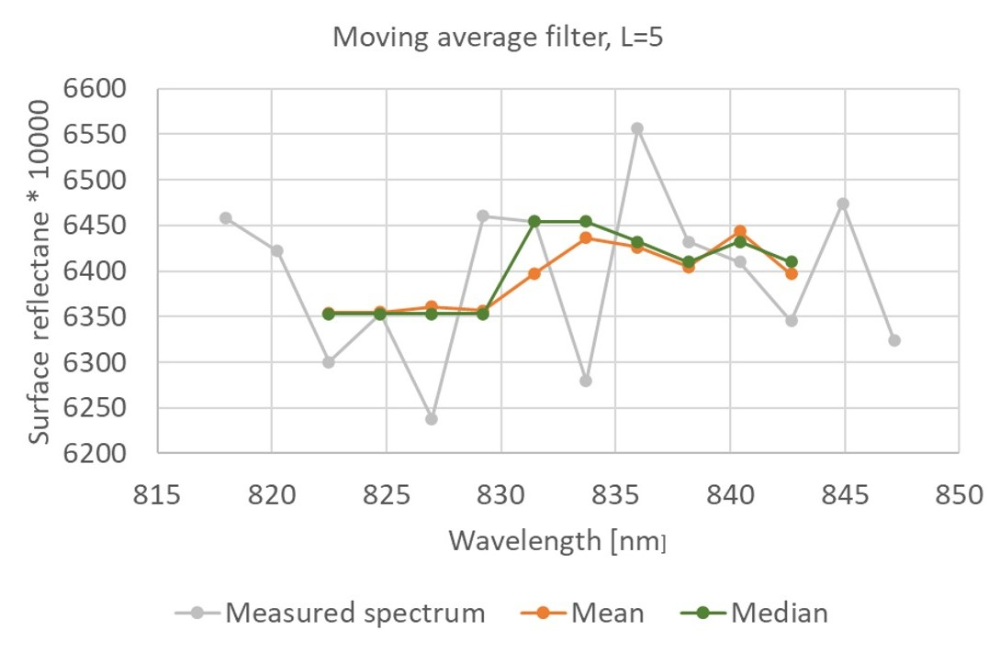
Figure 14. Example of spectrum smoothing using mean and median filters with the size of the convolution window L = 5. The original spectrum of tufted hairgrass was measured with a Nano-Hyperspec® line camera in June 2020. Figure by course authors.
The Savitzky-Golay filter discussed in Module 1 in connection with smoothing time series data is also applied to measured spectra.
Averaging of neighbouring bands followed by subsampling is applied when both data denoising and reduction are desired. Such procedure was used for the HS dataset from the Krkonoše Mts. tundra (see the dataset description) and Figure 15.
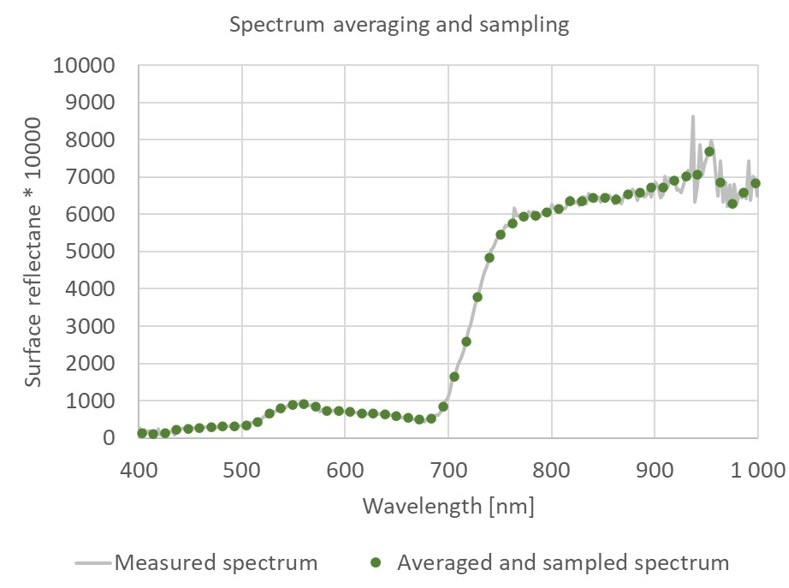
Figure 15. Example of spectrum smoothing using a median filter with the size of the convolution window L= 5 followed by sampling using the step size 5. The original spectrum of tufted hairgrass was measured with a Nano-Hyperspec® line camera in June 2020. It contained 270 bands that were reduced to 54 bands, taking a median of 5 neighbouring measurements. Figure by course authors.
Tutorial
To better understand the Moving Average and Savitzky-Golay filters, go to the Tutorial on Spectra smoothing and denoising. In a Jupyter Notebook, you can explore their parameters and their influence on the level of spectra smoothing. To understand the consequences of smoothing on measured spectra, read the by study Vaiphasa, (2006).
Principal Component Analysis (PCA)
The spectral bands of HS images are highly correlated, as depicted in Figure 16. As explained in Module 2, the Principal Component Analysis (PCA) transforms the image into new, uncorrelated bands and gives the possibility to reduce data volume and uncorrelated noise if only components preserving high image variance are used. It shall be noted that small but significant band differences may appear only in the components of low variance, and thus, their removal must be done with caution (Schowengerdt, 2006).
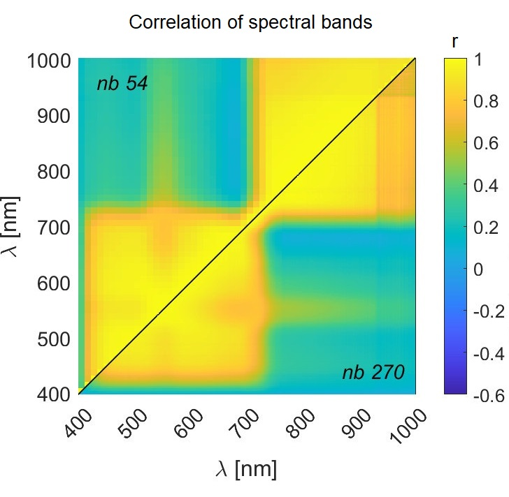
Figure 16. Correlation of 391504 spectral measurements of dominating grass species in the Krkonoše Mts. tundra collected with a Nano-Hyperspec® line camera in August 2020. The correlation was calculated both for original spectra containing nb = 270 spectral bands and spectra reduced to nb = 54 bands, taking a median of 5 neighbouring measurements. Notice the corresponding patterns in both parts of the figure. Figure by course authors.
Maximum Noise Fraction (MNF)
Noise in HS images can be effectively removed with the maximum noise fraction (MNF) transformation (Green et al., 1988). It is a modification of PCA and can improve the isolation of the noisiest bands in a HS image (Schowengerdt, 2006). The influence of the MNF transformation on the classification accuracy of grass species from time series of HS imagery is part of the case study on Discrimination of selected grass species from time series of RPAS hyperspectral imagery.
Spectral indices
A direct comparison of radiometrically corrected surface reflectance in time series is possible. In many cases, the relationship between spectral properties of the studied surface and its physical and chemical properties is known. Thus, instead of studying the whole spectrum, attention can be paid only to selected spectral bands and their combinations. In Module 2, the term spectral index was introduced, and some examples of indices used for multispectral data were given. The same approach, i.e., using mathematical operations on measurements from two and more spectral bands to emphasize certain properties of the observed surface can be applied to HS imagery. Thanks to its narrow spectral bands, more details can be inspected. The case study on the seasonal dynamics of flood-plain forests gives some examples of indices used in imaging spectroscopy, including their calculation in R. More examples can be found in, e.g., Roberts et al. (2018); Broge and Mortensen (2002); Envi (2023).
Continuum removal
The method of Continuum Removal (CR) is applied to normalise the shape of the spectral curve on selected wavelength intervals. These intervals are characteristic for the phenomenon under study, typically around the absorption bands. Figure 17 explains the principle of the method.
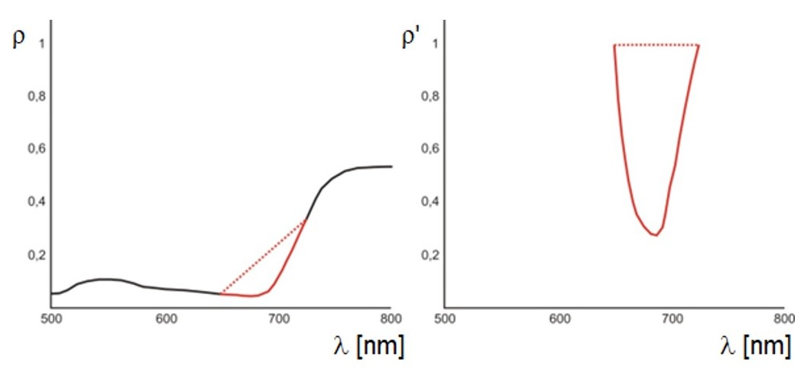
Figure 17. Principle of the continuum removal method. Original spectrum (left) and the transformed spectrum after continuum removal (right). Figure by Albrechtová et al. (2017)
The end points of the interval on the spectral curve determine the continuum line, and their new value is equal to one. The other transformed reflectance values take values in the interval 0 - 1 and are recalculated as:
where \(\rho^{'} _{\lambda}\) is the reflectance value after the CR transformation at wavelength λ, \(\rho _{\lambda}\) is the original reflectance value at the same wavelength and \(\rho _{c(\lambda)}\) is the continuum value, i.e., the value at wavelength λ given on the line connecting the points of the selected interval on the reflectance spectral curve (Kokaly and Clark, 1999). Removing the continuum from a selected part of the spectrum allows for the calculation of the depth of the absorption band or its area. This is used, for example, by the vegetation index ANMB650-725 (Area under curve Normalized to Maximum Band depth between 650-725 nm, Malenovský et al., 2006).
Self-evaluation quiz
Next unit
Proceed with In situ and laboratory spectroscopy of vegetation
References
Key literature
Pepe, M., Fregonese, L., Scaioni, M. (2018). Planning airborne photogrammetry and remote-sensing missions with modern platforms and sensors. European Journal of Remote Sensing, 51(1), 412-436. 10.1080/22797254.2018.1444945.
Schläpfer, D., Richter, R., Hueni, A. (2009). Recent developments in operational atmospheric and radiometric correction of hyperspectral imagery. In Proc. 6th EARSeL SIG IS Workshop (pp. 16-19). researchgate.net.
Habib, A., Han, Y., Xiong, W., He, F., Zhang, Z., Crawford, M. (2016). Automated ortho-rectification of UAV-based hyperspectral data over an agricultural field using frame RGB imagery. Remote Sensing, 8(10), 796. 10.3390/rs8100796.
Further articles, referenced literature and resources
Angel, Y., Turner, D., Parkes, S., Malbeteau, Y., Lucieer, A., McCabe, M. F. (2019). Automated georectification and mosaicking of UAV-based hyperspectral imagery from push-broom sensors. Remote Sensing, 12(1), 34. 10.3390/rs12010034.
ATCOR-4 (2023): ATCOR 4 - for Airborne Remote Sensing Systems. rese-apps.com.
Baugh, W. M., Groeneveld, D. P. (2008). Empirical proof of the empirical line. International Journal of Remote Sensing, 29(3), 665-672. 10.1080/01431160701352162.
Broge, N. H., & Mortensen, J. V. (2002). Deriving green crop area index and canopy chlorophyll density of winter wheat from spectral reflectance data. Remote sensing of environment, 81(1), 45-57. 10.1016/S0034-4257(01)00332-7).
Canada Centre for Mapping and Earth Observation – Remote Sensing Tutorial. natural-resources.canada.ca.
Albrechtová, J., Kupková, L., Campbell, P. K. (2017). Metody hodnocení fyziologického stavu smrkových porostů: případové studie sledování vývoje stavu smrkových porostů v Krušných horách v letech 1998-2013. Česká geografická společnost.
Červená, L., Lysák, J., Potůčková, M., Kupková, L. (2020). Zkušenosti se zpracováním hyperspektrálních dat pořízených UAV. GIS Ostrava. 10.31490/9788024843988-4.
Colomina, I., Molina, P. (2014). Unmanned aerial systems for photogrammetry and remote sensing: a review. ISPRS J. Photogramm. Remote Sens. 92, 79–97 10.1016/j.isprsjprs.2014.02.013.
ENVI (2023). Vegetation Indices Background. nv5geospatialsoftware.com.
Förstner, W., Wrobel, B. P. (2016). Photogrammetric computer vision. Springer International Publishing Switzerland.
Green, A. A., Berman, M., Switzer, P., & Craig, M. D. (1988). A transformation for ordering multispectral data in terms of image quality with implications for noise removal. IEEE Transactions on geoscience and remote sensing, 26(1), 65-74. 10.1109/36.3001.
Hadley, B. C., Garcia-Quijano, M., Jensen, J. R., Tullis, J. A. (2005). Empirical versus model‐based atmospheric correction of digital airborne imaging spectrometer hyperspectral data. Geocarto International, 20(4), 21-28. 10.1080/10106040508542360.
Hakala, T. et al. (2018). Direct reflectance measurements from drones: Sensor absolute radiometric calibration and system tests for forest reflectance characterization. Sensors, 18(5), 1417. 10.3390/s18051417.
Hanuš, J., Fabiánek, T., Fajmon, L. (2016). Potential of airborne imaging spectroscopy at CzechGlobe. The International Archives of the Photogrammetry, Remote Sensing and Spatial Information Sciences, 41, 15-17. 10.5194/isprs-archives-XLI-B1-15-2016.
Hruska, R., Mitchell, J., Anderson, M., Glenn, N. F. (2012): Radiometric and Geometric Analysis of Hyperspectral Imagery Acquired from an Unmanned Aerial Vehicle. Remote Sensing. 9, 4, 2736–2752. 10.3390/rs4092736.
Jiang, S., Jiang, C., Jiang, W. (2020). Efficient structure from motion for large-scale UAV images: A review and a comparison of SfM tools. ISPRS Journal of Photogrammetry and Remote Sensing, 167, 230-251. 10.1016/j.isprsjprs.2020.04.016.
Kokaly, R. F., Clark, R. N. (1999). Spectroscopic determination of leaf biochemistry using band-depth analysis of absorption features and stepwise multiple linear regression. Remote sensing of environment, 67(3), 267-287. 10.1016/S0034-4257(98)00084-4.
Kraus, K. (2007). Photogrammetry: Geometry from Images and Laser Scans. de Gryter, 2nd edition.
Malenovsky, Z., Ufer, C., Lhotáková, Z., Clevers, J. G., Schaepman, M. E., Albrechtová, J., & Cudlín, P. (2006). A new hyperspectral index for chlorophyll estimation of a forest canopy: Area under curve normalised to maximal band depth between 650-725 nm. EARSeL eProceedings, 5(2), 161-172. library.wur.nl.
Merzah, Z. F., Jaber, H. S. (2020). Assessment of Atmospheric Correction Methods for Hyperspectral Remote Sensing Imagery Using Geospatial Techniques. In IOP Conference Series: Materials Science and Engineering (Vol. 745, No. 1, p. 012123). IOP Publishing. 10.1088/1757-899X/745/1/012123.
de Miguel, E., Jiménez, M., Pérez, I., de la CÁMARA, Ó. G., Muñoz, F., Gómez-Sánchez, J. A. (2015). AHS and CASI processing for the REFLEX remote sensing campaign: methods and results. Acta Geophysica, 63, 1485-1498. 10.1515/acgeo-2015-0031.
Ortiz, J. D., Avouris, D., Schiller, S., Luvall, J. C., Lekki, J. D., Tokars, R. P., Becker, R. (2017). Intercomparison of approaches to the empirical line method for vicarious hyperspectral reflectance calibration. Frontiers in Marine Science, 4, 296. 10.3389/fmars.2017.00296.
Remondino, F., Spera, M. G., Nocerino, E., Menna, F., Nex, F. (2014). State of the art in high density image matching. The photogrammetric record, 29(146), 144-166. 10.1111/phor.12063.
Richter, R. (1997). Correction of atmospheric and topographic effects for high spatial resolution satellite imagery. International journal of remote sensing, 18(5), 1099-1111. 10.1080/014311697218593.
Richter, R., Schläpfer, D. (2002). Geo-atmospheric processing of airborne imaging spectrometry data. Part 2: Atmospheric/topographic correction. International Journal of Remote Sensing, 23(13), 2631-2649. 10.1080/01431160110115834.
Roberts, D. A., Roth, K. L., Wetherley, E. B., Meerdink, S. K., Perroy, R. L. (2018). Hyperspectral vegetation indices. In Hyperspectral indices and image classifications for agriculture and vegetation (pp. 3-26). CRC press.
Schläpfer, D., Popp, C., Richter, R. (2020). Drone data atmospheric correction concept for multi-and hyperspectral imagery–the DROACOR model. Int. Arch. Photogramm. Remote Sens. Spatial Inf. Sci., XLIII-B3-2020, 473–478. 10.5194/isprs-archives-XLIII-B3-2020-473-2020.
Schowengerdt, R. A. (2006). Remote sensing: models and methods for image processing. Elsevier, 3rd edition.
Stull, R. (2023): Scattering. LibreTexts, Geosciences. 22.4 Scattering. geo.libretexts.org.
Suomalainen, J., Anders, N., Iqbal, S., Roerink, G., Franke, J., Wenting, P., ... , Kooistra, L. (2014). A lightweight hyperspectral mapping system and photogrammetric processing chain for unmanned aerial vehicles. Remote Sensing, 6(11), 11013-11030. 10.3390/rs61111013.
Suomalainen, J., Oliveira, R. A., Hakala, T., Koivumäki, N., Markelin, L., Näsi, R., Honkavaara, E. (2021). Direct reflectance transformation methodology for drone-based hyperspectral imaging. Remote Sensing of Environment, 266, 112691. 10.1016/j.rse.2021.112691.
Toth, C., Józków, G. (2016). Remote sensing platforms and sensors: A survey. ISPRS Journal of Photogrammetry and Remote Sensing, 115 (2016) 22–36. 10.1016/j.isprsjprs.2015.10.004.
Turner, D., Lucieer, A., McCabe, M., Parkes, S., Clarke, I. (2017). Pushbroom hyperspectral imaging from an unmanned aircraft system (uas)–geometric processing workflow and accuracy assessment. The International Archives of the Photogrammetry. Remote Sensing and Spatial Information Sciences. XLII-2/W6. 379–384. 10.5194/isprs-archives-xlii-2-w6-379-2017.
Vaiphasa, C. (2006). Consideration of smoothing techniques for hyperspectral remote sensing. ISPRS journal of photogrammetry and remote sensing, 60(2), 91-99. 10.1016/j.isprsjprs.2005.11.002.
Vermote, E. F., Tanré, D., Deuze, J. L., Herman, M., Morcette, J. J. (1997). Second simulation of the satellite signal in the solar spectrum, 6S: An overview. IEEE transactions on geoscience and remote sensing, 35(3), 675-686. 10.1109/36.581987.
Zhou, Q., Wang, S., Liu, N., Townsend, P. A., Jiang, C., Peng, B., Verhoef, W., Guan, K. (2023). Towards operational atmospheric correction of airborne hyperspectral imaging spectroscopy: Algorithm evaluation, key parameter analysis, and machine learning emulators. ISPRS Journal of Photogrammetry and Remote Sensing, 196, 386-401. 10.1016/j.isprsjprs.2022.11.016.